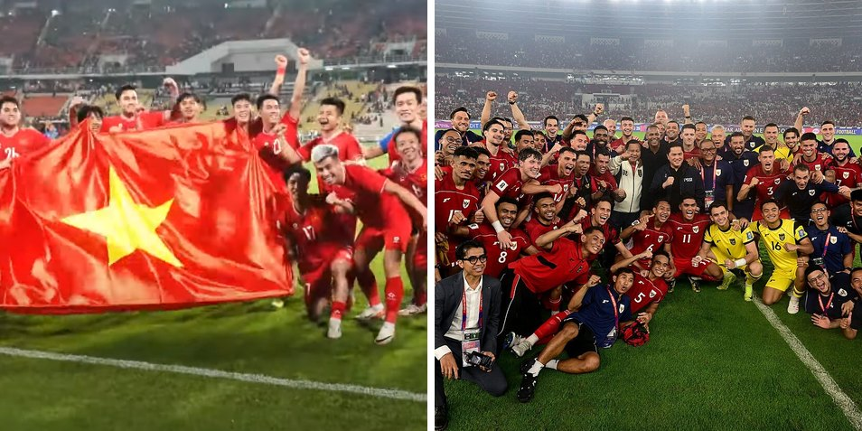
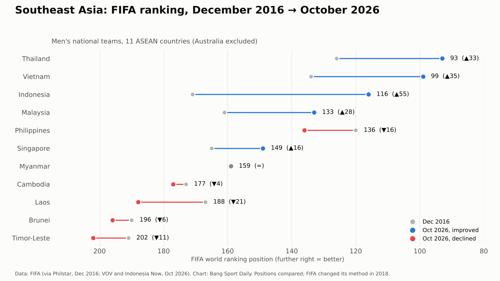
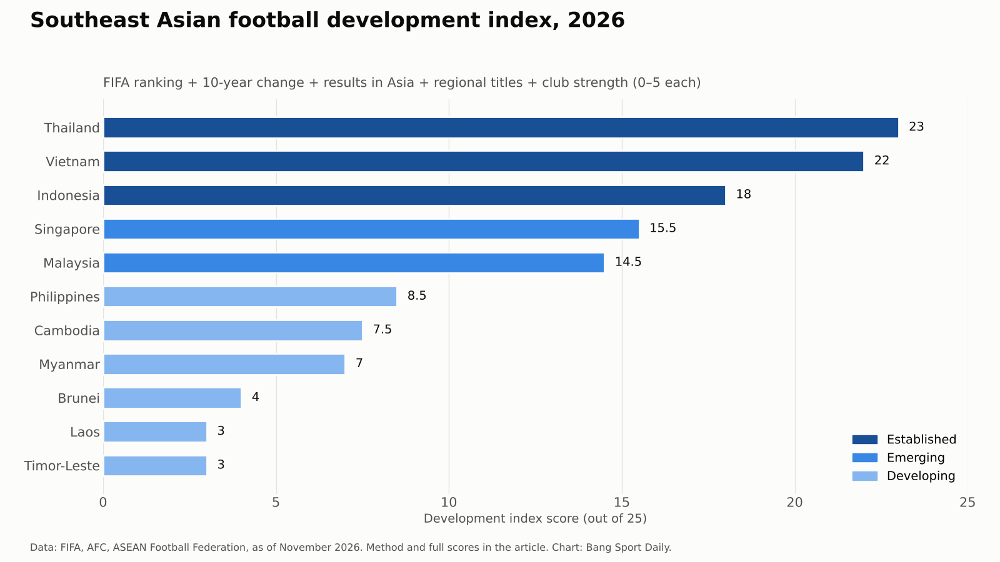
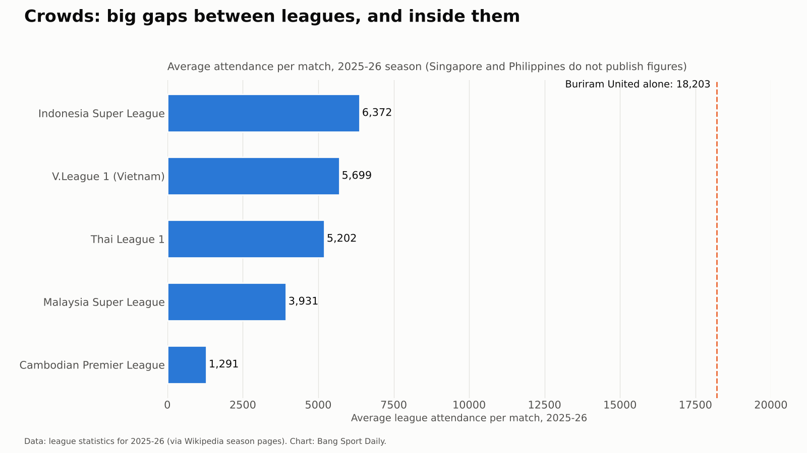

Десятилетие футбола Юго-Восточной Азии: что помогло лидерам и что сдерживает остальных
Данные по 11 сборным, семи лигам и их клубам показывают, почему вперёд вышли Таиланд, Вьетнам и Индонезия, где находятся Сингапур и Малайзия и какие проблемы должна решить каждая страна, включая Камбоджу.

Десять лет назад Филиппины были самой высокорейтинговой футбольной страной Юго-Восточной Азии. Сегодня они пятые, Индонезия поднялась на 55 мест, Вьетнам дважды подряд выиграл региональный титул, а камбоджийские клубы дважды доходили до континентальных финалов. Цифры показывают, кто продвинулся. Этот анализ объясняет почему, что мешает каждой стране и чему может научиться весь регион.
Ключевые цифры
- Таиланд (93-е место) и Вьетнам (99-е) — единственные команды региона в первой сотне мирового рейтинга или у её границы.
- Индонезия поднялась со 171-го места в 2016 году на 116-е в 2026-м — это самый большой рост в регионе.
- На Кубке Азии 2027 года сыграют четыре сборные Юго-Восточной Азии: Индонезия, Таиланд, Вьетнам и Сингапур.
- Тайские клубы занимают третье место в Восточной Азии, выше Китая. Камбоджийские — десятое, выше индонезийских.
- Средняя посещаемость лиг — от 6372 зрителей в Индонезии до 1291 в Камбодже.

Кратко о расстановке сил
Индекс развития, построенный на пяти открытых показателях (текущий рейтинг ФИФА, изменение за десять лет, результаты в Азии, региональные титулы и сила клубов), делит 11 стран на три группы. Развитые: Таиланд (23 из 25), Вьетнам (22), Индонезия (18). Растущие: Сингапур (15,5), Малайзия (14,5). Развивающиеся: Филиппины (8,5), Камбоджа (7,5), Мьянма (7), Бруней (4), Лаос (3) и Тимор-Лешти (3). Методика приведена в конце. Австралия, член Федерации футбола АСЕАН с 2013 года, исключена как признанная азиатская сила.

Чего цифры сказать не могут
Анализ опирается на данные, но читателям стоит знать их ограничения.
- Методика рейтинга менялась. В 2018 году ФИФА изменила формулу рейтинга, поэтому за десять лет можно сравнивать только места, а не очки.
- Деньги скрыты. Ни одна лига Юго-Восточной Азии не публикует бюджеты клубов. Оценки Transfermarkt — это оценки, а не отчётность.
- Не все лиги публикуют посещаемость. Сингапур и Филиппины таких данных не раскрывают.
- Понятие «развития» спорно. Результаты, достигнутые благодаря игрокам иностранного происхождения, учитываются в рейтинге, но мало говорят о том, как страна сама готовит футболистов.
- Спорт не существует в вакууме. Политика, безопасность и управление влияют на несколько описанных ниже историй.
Вьетнам: терпение окупается
Что изменилось: рост в рейтинге ФИФА со 134-го на 99-е место; чемпион АСЕАН 2024 и 2026 годов; золото Игр Юго-Восточной Азии 2025 года; третье место на Кубке Азии U-23 2026 года.
Почему: Вьетнам рано вложился в академии. «Хоанг Ань Зялай» в 2007 году открыл академию вместе с «Арсеналом» и JMG, воспитавшую игроков сборной, таких как Нгуен Конг Фыонг и Лыонг Суан Чыонг. Академия PVF, основанная в 2009 году на средства Vingroup, в 2020 году первой в Юго-Восточной Азии получила высший, трёхзвёздочный рейтинг АФК. Долгая работа главных тренеров сборной — Пак Хан Со в 2017–2023 годах и Ким Сан Сика с 2024 года — дала этим игрокам стабильную систему.
Проблема: клубы не успевают за сборной. Вьетнамские клубы лишь седьмые в Восточной Азии, и проблемы управления сохраняются. В Лиге чемпионов АФК Два 2025/26 чемпион страны «Конг Ан Ханой» получил техническое поражение за выход незаявленных игроков, а в сентябре 2026 года ФИФА запретила клубу регистрировать новых футболистов до урегулирования спора.
Урок: работа с молодёжью — самый медленный и самый надёжный путь. Но ей нужна столь же профессиональная клубная система.

Таиланд: сильные клубы, сборная под давлением
Что изменилось: со 126-го на 93-е место — лучший результат в регионе; клубы третьи в Восточной Азии и имеют две прямые путёвки в Лигу чемпионов АФК Элита.
Почему: тайский клубный футбол стал профессиональным раньше, чем у соседей. «Бурирам Юнайтед», принадлежащий Невину Чидчобу, в 2011 году за 256 дней построил стадион «Чанг Арена» на 32 600 мест, наладил молодёжные партнёрства с дортмундской «Боруссией» и «Лестер Сити» и 12 раз выигрывал чемпионат. Тайские игроки набирались опыта и за рубежом: Чанатип Сонкрасин и Тиратон Бунматан стали игроками основы в японской J1 League.
Проблема: сила сосредоточена в одном месте. В сезоне 2025/26 «Бурирам» собирал в среднем 18 203 зрителя на домашний матч, а лига в целом — 5202. Сборная проиграла финалы чемпионата АСЕАН 2024 и 2026 годов Вьетнаму, финал Кубка АСЕАН ФИФА — Индонезии, а финал Игр Юго-Восточной Азии 2025 года — у себя дома.
Урок: несколько сильных клубов поднимают рейтинг лиги, но успех сборной требует глубины во многих клубах.

Индонезия: самый быстрый рост — но сверху
Что изменилось: со 171-го на 116-е место; единственная команда региона, дошедшая до четвёртого раунда отбора к ЧМ-2026; победитель первого Кубка АСЕАН ФИФА в октябре 2026 года.
Почему: федерация, которую с 2023 года возглавляет Эрик Тохир, выбрала быстрый путь — массовую натурализацию игроков индонезийского происхождения, многие из которых выросли в Нидерландах. В предварительном списке из 30 игроков на март 2025 года натурализованных было 19. Кроме того, у Индонезии самая большая фан-база региона: средняя посещаемость лиги — 6372 зрителя, а рекорд одного матча в феврале 2026 года — 56 989.
Проблема: основа не поспевает. Индонезийские клубы лишь 11-е в Восточной Азии — ниже камбоджийских, а каждый клуб может заявить 11 легионеров, что сокращает игровое время местных футболистов. Десятилетие принесло и кризисы: дисквалификацию ФИФА в 2015–2016 годах из-за вмешательства правительства и трагедию на стадионе «Канджурухан» в октябре 2022 года, когда полиция применила слезоточивый газ на трибунах и погибли 135 человек.
Урок: игроки иностранного происхождения могут быстро преобразить сборную, но долгосрочная сила по-прежнему зависит от местных игроков, безопасных стадионов и хорошо управляемых клубов.

Сингапур: план, частные деньги и жёсткое ограничение
Что изменилось: со 165-го на 149-е место; без поражений в отборе и выход на Кубок Азии 2027 года — первый с 1984 года, когда страна принимала турнир.
Почему: Футбольная ассоциация Сингапура в 2021 году запустила долгосрочную программу Unleash the Roar с целью выйти на чемпионат мира 2034 года. За ней последовали частные инвестиции: «Лайон Сити Сейлорс», с 2020 года принадлежащий технологической группе Sea Limited, построил тренировочный центр за 10 млн сингапурских долларов и в 2025 году дошёл до финала Лиги чемпионов АФК Два. Призовой фонд лиги в сезоне 2025/26 вырос с 290 000 до 600 000 сингапурских долларов.
Проблема: небольшой кадровый резерв и обязательная военная служба. В 2018 году правительство отказало 17-летнему Бену Дэвису, подписавшему контракт с «Фулхэмом», в отсрочке от службы. За 15 лет долгосрочную отсрочку получили лишь три спортсмена.
Урок: чёткий национальный план и частные инвестиции могут поднять уровень небольшой страны, но правила, прерывающие карьеру молодых игроков, ставят потолок.

Малайзия: один гигант и дорогой скандал
Что изменилось: со 161-го на 133-е место; клубы шестые в Восточной Азии; «Джохор Дарул Тазим» (JDT) дошёл до четвертьфинала Лиги чемпионов АФК Элита 2026 года.
Почему: JDT, принадлежащий наследному принцу Джохора Тунку Исмаилу Идрису, построил стадион «Султан Ибрагим» на 40 000 мест и выиграл Кубок АФК 2015 года. Национальная программа подготовки молодёжи (NFDP), запущенная в 2014 году вместе с академией Мохтара Дахари, создала путь для молодых игроков.
Проблема: дисбаланс и управление. JDT 12 раз подряд выиграл чемпионат, последний раз без поражений, тогда как другие клубы испытывают трудности: в сезоне 2025/26 «Кедах» исключили из-за финансовых проблем, а «Келантан» — за несоответствие лицензионным требованиям. В сентябре 2025 года ФИФА наказала Футбольную ассоциацию Малайзии и семерых игроков за подделку документов о праве выступать за сборную, а в марте 2026 года АФК аннулировала результаты двух отборочных матчей Малайзии к Кубку Азии. Малайзия на турнир не попала.
Урок: соблюдение правил — часть развития. Один скандал может перечеркнуть годы прогресса на поле.

Филиппины: подъём, который не продлился
Что изменилось: со 120-го места — первого в регионе в 2016 году — на 136-е в 2026-м.
Почему: «Чудо в Ханое» — победа 2:0 над действующим чемпионом Вьетнамом в декабре 2010 года — запустило бум, во многом построенный на игроках, выросших за рубежом. Интерес и результаты росли на протяжении 2010-х.
Проблема: внутренняя база осталась слабой. Нынешняя Футбольная лига Филиппин основана лишь в 2017 году, а в сезоне 2025/26 весь первый круг прошёл на одном стадионе. Её клубы — 12-е в Восточной Азии.
Урок: успех, построенный в основном на игроках, подготовленных за границей, угасает, если за ним не растут внутренняя лига и массовый футбол.
Камбоджа: клубы растут, сборная ждёт
Что изменилось: сборная опустилась со 173-го на 177-е место. Клубы двигались в обратном направлении: лига Камбоджи занимает десятое место в Восточной зоне АФК, выше Индонезии, и впервые имеет два места в Лиге чемпионов АФК Два.
Почему: клубы быстро стали профессиональнее. «ПКР Свайриенг», председателем которого является Ди Витя, в 2025 и 2026 годах дважды доходил до финала Лиги вызова АФК и оба раза уступил в дополнительное время. «Пномпень Краун», принадлежащий Рити Самнангу с 2006 года, в сентябре 2026 года начал выступление в Лиге чемпионов АФК Два победой 2:1 над малайзийским «Кучинг Сити». Оба клуба работают с иностранными главными тренерами и опытными легионерами, а главный тренер сборной Кодзи Гётоку, работающий в Камбодже с 2019 года, говорит, что эти легионеры делятся опытом с местными игроками. У страны появился и национальный стадион «Мородок Течо» на 60 000 мест — подарок Китая стоимостью 150 млн долларов в 2021 году. В 2026 году сборная сыграла в финале, став второй на Кубке вызова АСЕАН ФИФА.
Проблема: узкая основа. Средняя посещаемость лиги — 1291 зритель, самая низкая среди лиг, публикующих данные. Второй дивизион в сезоне 2024/25 не проводился, поэтому не было ни повышения, ни понижения в классе. Клубы могут выпускать пятерых легионеров и одного натурализованного игрока, что оставляет молодым камбоджийцам меньше ключевых ролей. Сборная ни разу не выходила из группы чемпионата АСЕАН, проиграла стыковой матч Кубка Азии Шри-Ланке по пенальти и снялась с Игр Юго-Восточной Азии 2025 года по соображениям безопасности на фоне напряжённости на границе с Таиландом.
Урок: успех клубов — реальный актив, но он превращается в прогресс национального футбола только тогда, когда больше камбоджийских игроков получают решающие минуты, полная пирамида лиг работает каждый сезон, а число зрителей растёт.

Мьянма, Лаос, Бруней и Тимор-Лешти: основание пирамиды
Мьянма удержала 159-е место, но военный переворот в феврале 2021 года нарушил развитие её футбола: в тот год из-за протестного отказа игроков до половины обычного состава сборной могли пропустить отборочные матчи чемпионата мира. Лаос опустился со 167-го на 188-е место; в 2017 году АФК пожизненно дисквалифицировала за договорные матчи 22 игрока и функционера, большинство из которых были из Лаоса и клуба «Лао Тойота». Бруней имеет лишь один профессиональный клуб — DPMM, который играет не дома, а в лиге Малайзии. Тимор-Лешти был отстранён от Кубка Азии 2023 года после того, как 12 игроков бразильского происхождения были заявлены по поддельным документам.
Урок: честность и стабильность — прежде всего. Без них никакие вложения не будут долгими.
Вывод: пять уроков для региона
1. Клубы и сборные могут развиваться врозь. У Индонезии сильная сборная при более слабых клубах, у Камбоджи — наоборот. Обеим нужна недостающая половина.
2. Регулярные азиатские турниры повышают уровень. Тайские клубы проводят больше континентальных матчей, чем клубы любой другой страны региона, и Таиланд лидирует в региональном рейтинге.
3. Молодёжная система — самая надёжная инвестиция. Вьетнамские академии, создаваемые с 2007 года, теперь приносят титулы на всех уровнях.
4. Управление — часть результата. Санкции против Малайзии, дисквалификации за договорные матчи в Лаосе и поддельные документы Тимор-Лешти стоили этим странам результатов.
5. У коротких путей есть пределы. Большие квоты на легионеров и натурализация быстро улучшают результаты, но долгосрочная сила зависит от того, сколько местных игроков получают соревновательную практику.
Следующее испытание — Кубок Азии 2027 года, где четыре сборные Юго-Восточной Азии встретятся с сильнейшими командами континента. Для развивающихся стран данные указывают на практические приоритеты: полная пирамида лиг каждый сезон, больше игрового времени для местных футболистов и превращение клубных успехов в результаты сборной.
Как рассчитан индекс
Каждая страна получает от 0 до 5 баллов по пяти компонентам, всего 25: рейтинг ФИФА в октябре 2026 года (5 баллов — первая сотня, далее на балл меньше за каждые 30 мест); изменение с декабря 2016 года (5 баллов — рост на 30 мест и более); результаты в Азии (5 — четвёртый раунд отбора ЧМ и Кубок Азии 2027; 4 — Кубок Азии 2027; 2 — второе место в группе финального раунда отбора; 1 — место ниже или вылет в стыковых матчах); региональные турниры 2024–2026 (2 балла за титул, 1 — за финал, 0,5 — за полуфинал); и сила клубов по рейтингу и квотам АФК в Восточной зоне на 2026/27. Молодёжные результаты не учитываются, так как Камбоджа не участвовала в Играх Юго-Восточной Азии 2025 года.
Данные проверены в ноябре 2026 года. Источники: ФИФА, АФК, Федерация футбола АСЕАН, статистика лиг сезона 2025/26, оценки Transfermarkt и публикации, перечисленные ниже.